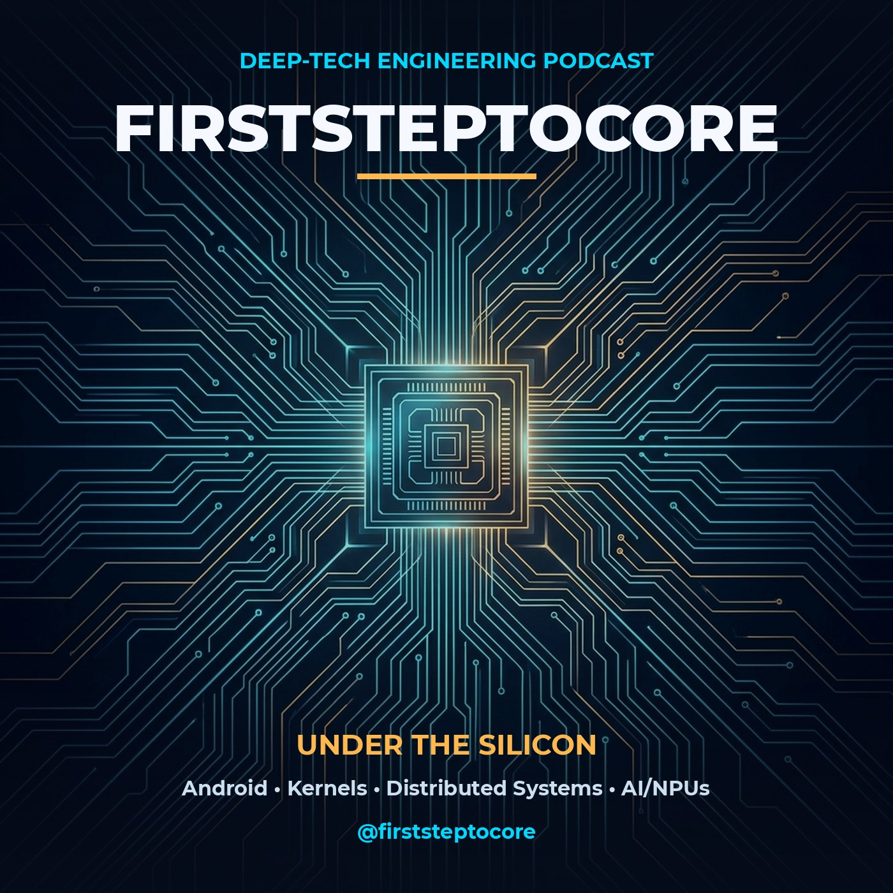

Short, deeply researched 9-minute engineering audio documentaries unpacking Android/Kotlin & iOS internals, Linux kernels, distributed systems, database storage engines, compilers, and on-device AI/NPUs.
Official RSS Feed: podcast.xml
Listen On: Spotify · Apple Podcasts · Amazon Music & Audible · YouTube Music
Free Under-the-Silicon Cheat Sheet & Visual Playbook: topmate.io/firststeptocore